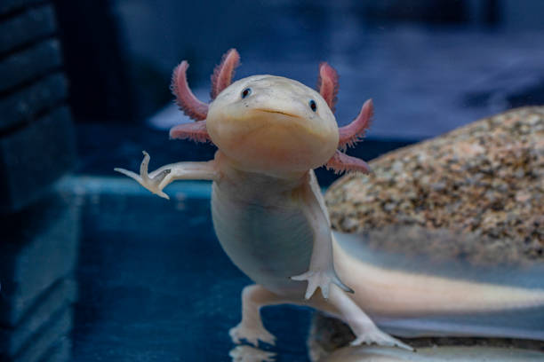
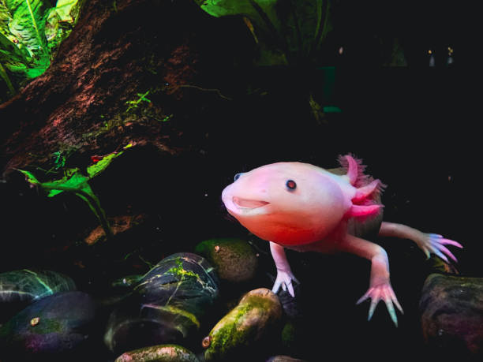
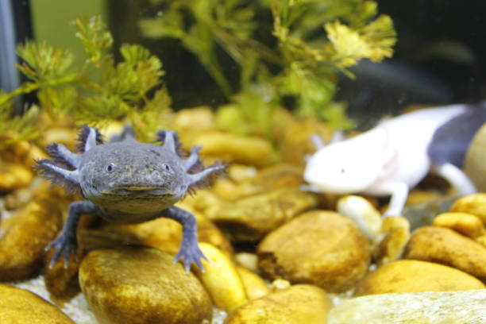
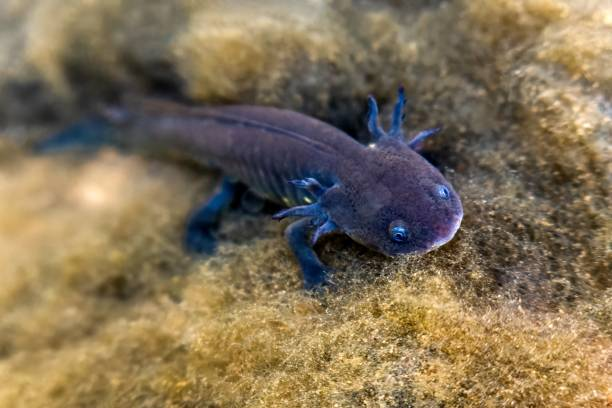
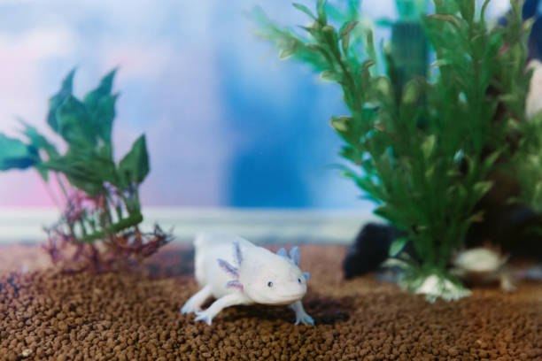
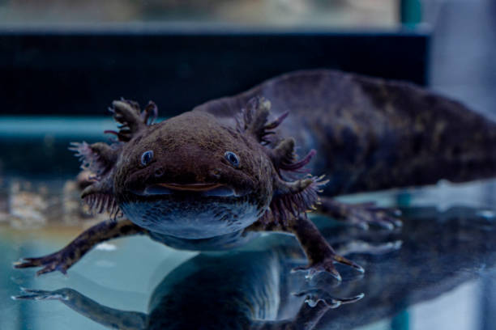

Jago regenerasi
Kaki, ekor, insang, bahkan sebagian jantung dan sumsum tulang belakang bisa tumbuh lagi, biasanya tanpa bekas luka.
Berkenalan dengan hewan air berwajah tersenyum yang mampu menumbuhkan kembali anggota tubuhnya. Penjelasannya singkat dan mudah dipahami, cocok untuk siapa saja yang baru mengenalnya.
Mulai KenalanAxolotl (dibaca "aks-o-lotl") adalah sejenis salamander, yaitu hewan amfibi, yang seumur hidupnya tinggal di dalam air. Warnanya bisa pink, putih, abu-abu, atau cokelat, dengan tiga pasang insang berbulu di sisi kepala. Namanya berasal dari bahasa Nahuatl, bahasa suku Aztek, dan kira-kira berarti "anjing air".
Danau Xochimilco dan sekitarnya, dekat Kota Meksiko, Meksiko. Hanya di sanalah axolotl hidup di alam liar.
Sangat Terancam Punah (Critically Endangered) menurut IUCN. Polusi, hilangnya habitat, dan ikan pendatang membuat jumlahnya di alam liar sangat sedikit.
Empat hal yang membuat axolotl berbeda dari hewan lain.
Kaki, ekor, insang, bahkan sebagian jantung dan sumsum tulang belakang bisa tumbuh lagi, biasanya tanpa bekas luka.
Mulutnya melengkung ke atas secara alami, sehingga wajahnya tampak tersenyum terus. Itu bentuk anatomi, bukan tanda sedang senang.
Kebanyakan salamander berubah bentuk dan pindah ke darat saat dewasa. Axolotl tetap berwujud "anak" dan tinggal di air seumur hidup. Istilahnya neoteni.
Selain pink (albino) dan putih (leucistic), ada yang cokelat gelap, abu-abu, hingga hitam. Warna di alam liar cenderung gelap.
Dua hal paling penting bagi pemula yang ingin memelihara.
Kulit axolotl sangat halus, jadi sebaiknya tidak dipegang tanpa alasan penting. Cek juga aturan kepemilikan di daerahmu sebelum membeli.
Tempat untuk foto-foto axolotl pilihanmu.






Silakan isi di bawah ini ya!
Pesanmu sudah terkirim.